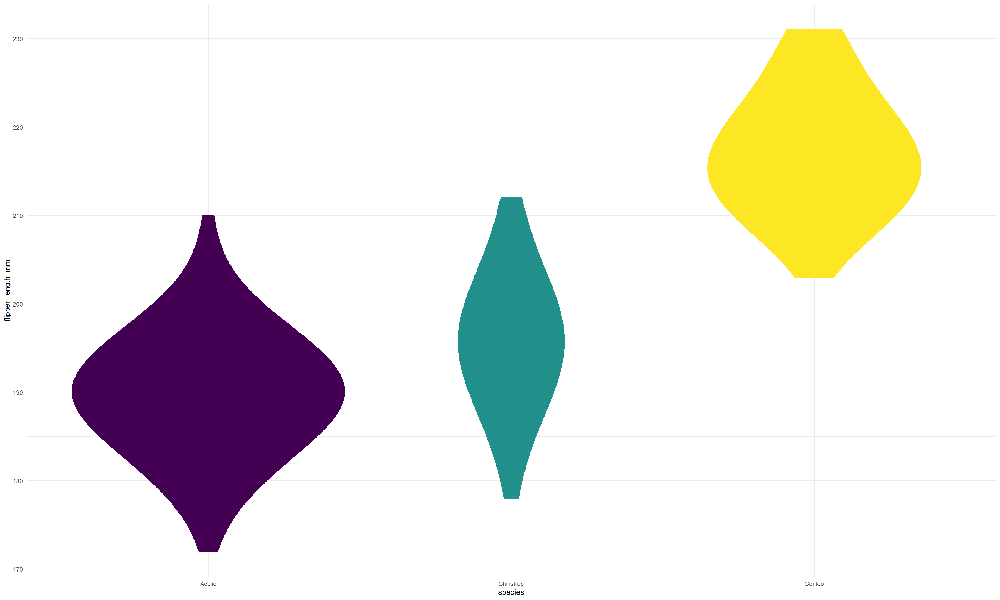

Carregando pacotes exigidos: ggplot2Carregando pacotes exigidos: palmerpenguinsCarregando pacotes exigidos: magrittrSeu Subtítulo Aqui
Seu Nome aqui
10 de outubro de 2023
Teste, gradativamente, os códigos do capítulo 8.
Para criar um slide com conteúdo basta utilizarmos um título de nível 2
Not all those who wander are lost. (J. R. R. Tolkein)
#| fig-width: 20 # comprimento
#| fig-height: 12 # altura
#| fig-align: "center"Warning: Removed 2 rows containing non-finite values (`stat_ydensity()`).
kable, do pacote knitr.palmerpenguins::penguins %>%
dplyr::group_by(species) %>%
dplyr::summarise(n = dplyr::n()) %>%
knitr::kable(col.names = c("Species", "Total") )| Species | Total |
|---|---|
| Adelie | 152 |
| Chinstrap | 68 |
| Gentoo | 124 |